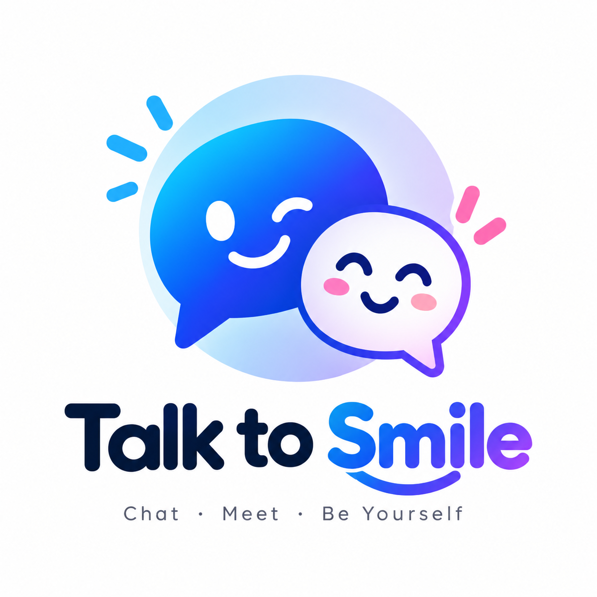

Talk to Smile is a free platform to talk to strangers online. Meet new people, start random conversations and make new connections without registration.
Looking for a simple way to talk to strangers? Talk to Smile lets you connect with random people online and enjoy text and voice conversations in a simple and easy way.
Enter your username, click Start Chat and get connected with a random stranger. You can chat through text or use voice chat to start a conversation.
Talk to Smile is designed for people who want to meet new people, talk to strangers online and enjoy random conversations without creating an account.
Status: Idle